Ulysses: a first reading · Dimension 14 · Method
The Atlas of One Day
Dimension 14 · Type VI, a made object · eighteen panels, one per episode
Eighteen panels, one for each section of 16 June 1904, each carrying three slots in one fixed order — a thing of the kind the book names, a place, a period document — whether or not a picture has been found for them. The first slot holds a KIND, not a relic: the book's objects are mostly Joyce's inventions, and what a photograph can show is another letter, another advertisement, another sovereign. This atlas is a museum of the day's kinds, and says so rather than letting a slot's position claim otherwise. Nothing on a panel explains a panel. That is the form — meaning made by arrangement rather than by argument — and it is also the licence: attribution for these images lives in the colophon below, which is lawful only while no panel carries any credit at all. A single caption would breach every share-alike licence on this page at once.
Where a slot is empty it is shown empty — a drawn keyline at exactly the footprint a picture would occupy, never closed up and never textured. The grid does not tidy itself. Every absence has a reason and every reason is in the colophon.
State 1 · as of 4 August 2026 · Of 54 slots, 43 hold an image and 11 are empty — 17 of 18 objects, 10 of 18 places, 16 of 18 documents. 10 of 18 panels hold all three layers; 5 hold two, 3 hold one. This is not a promise about the rest.
The episode numbers and names beside each panel are scaffolding: Joyce printed no episode titles, and these are the project's own labels for the day's eighteen sections (anchor A2). They say which episode a panel belongs to. They do not say what it means.
1Telemachus
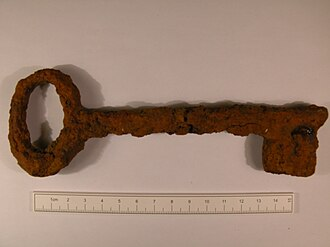
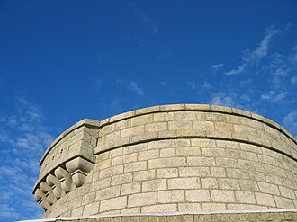
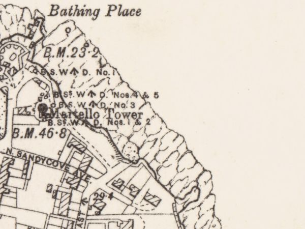
2Nestor
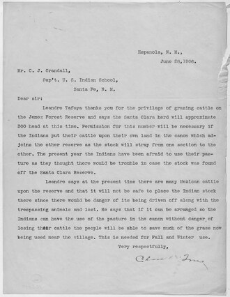
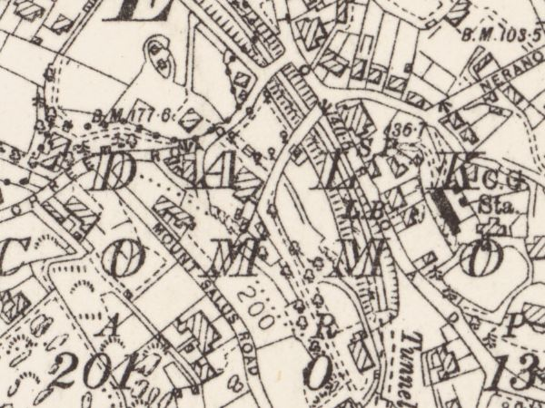
3Proteus
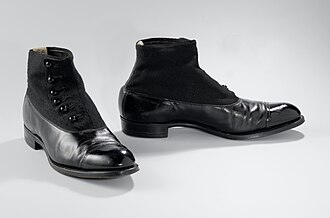
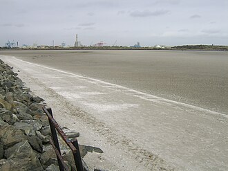

4Calypso
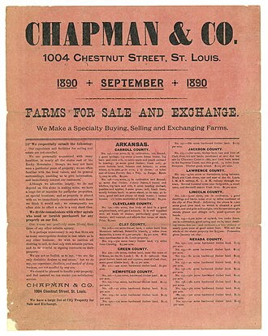
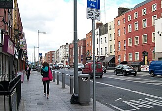
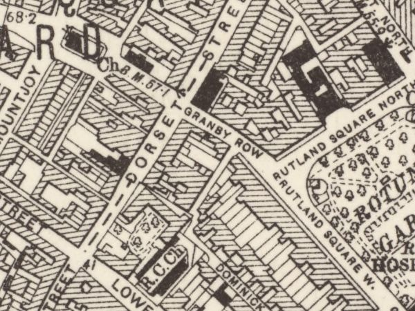
5Lotus Eaters
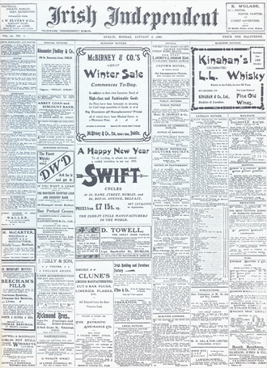
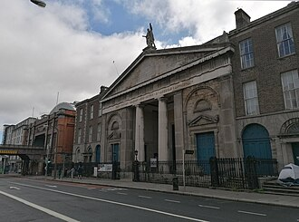
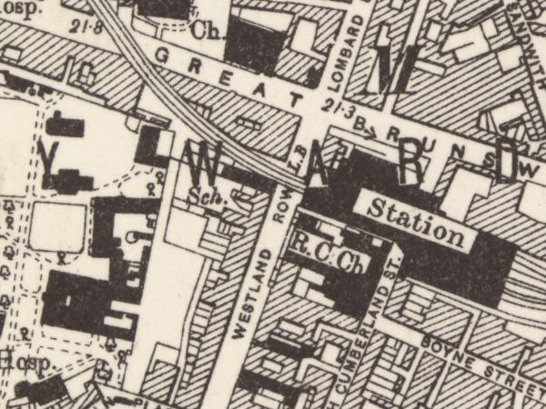
6Hades
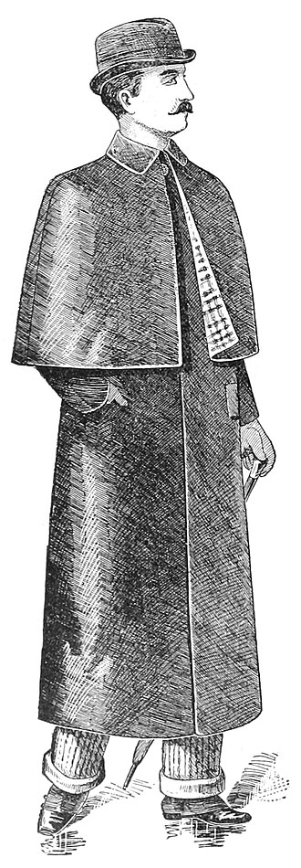
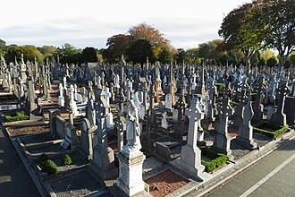
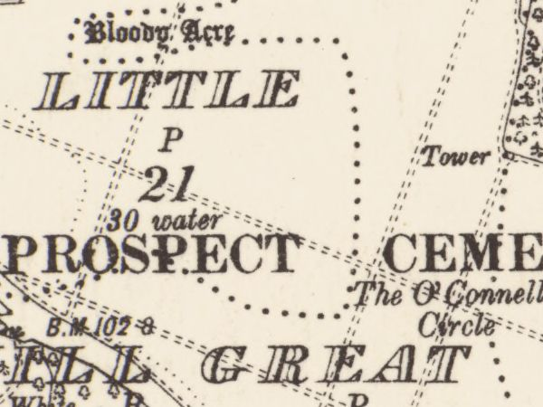
7Aeolus
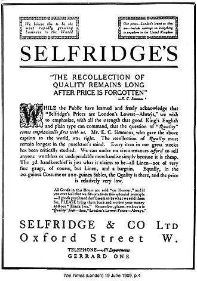
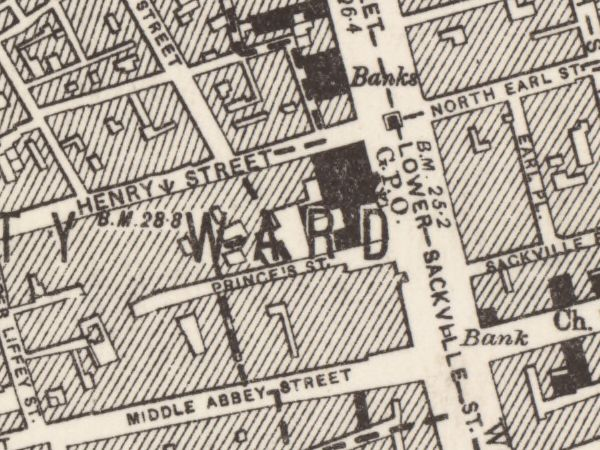
8Lestrygonians
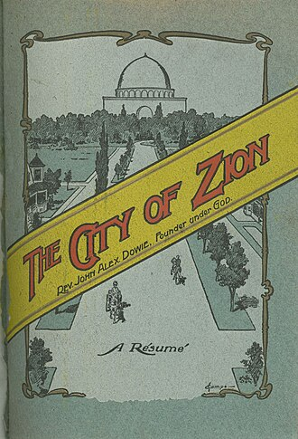
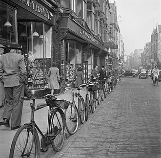
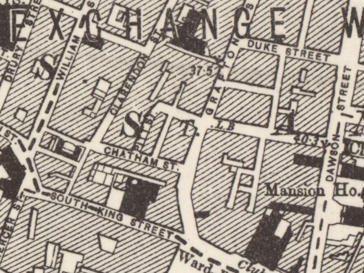
9Scylla and Charybdis
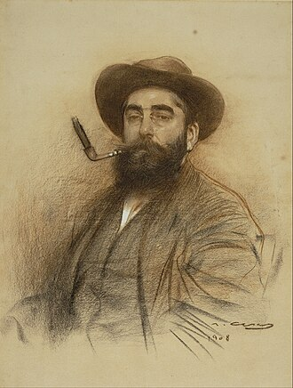
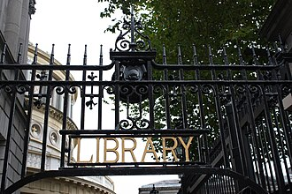
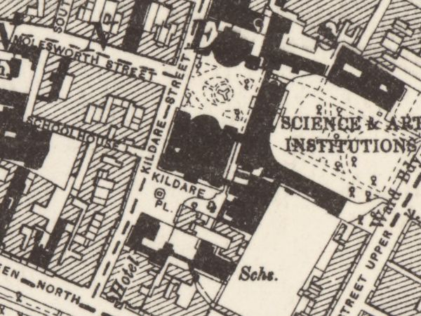
10Wandering Rocks
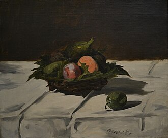
11Sirens
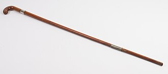
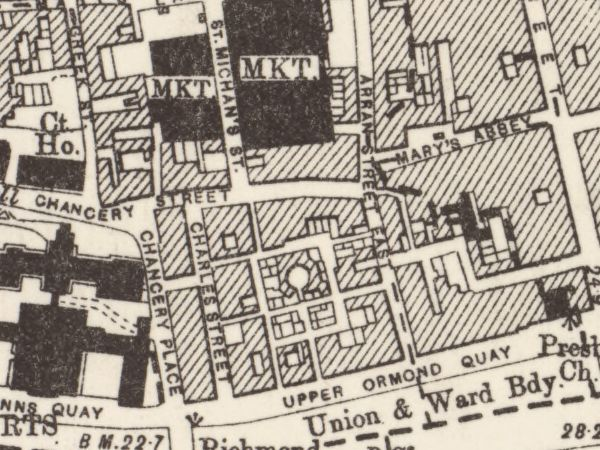
12Cyclops
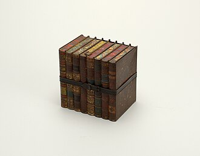
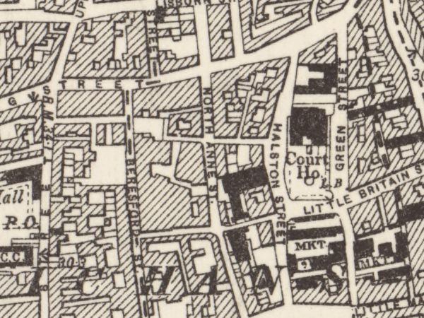
13Nausicaa
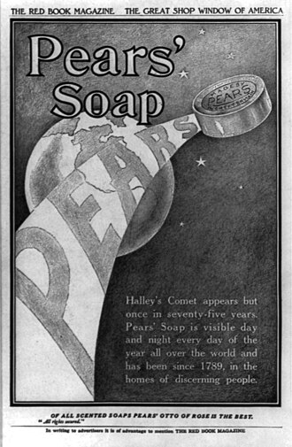
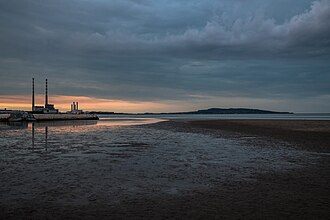
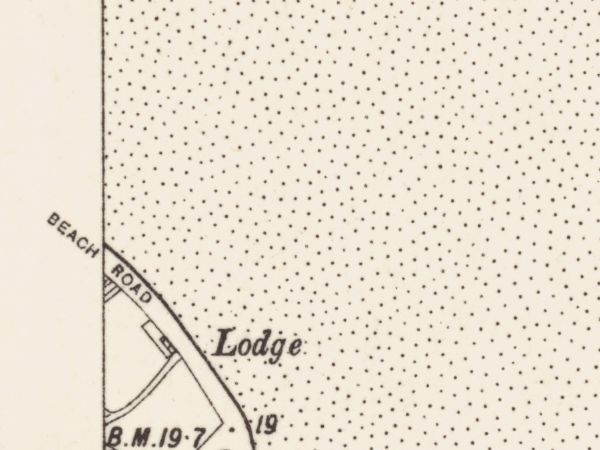
14Oxen of the Sun
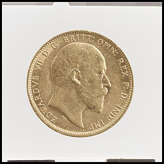
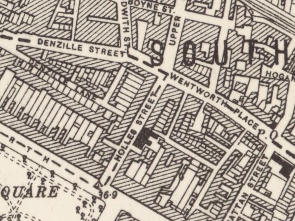
15Circe
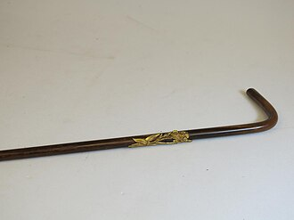
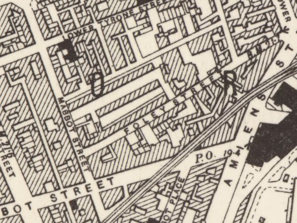
16Eumaeus
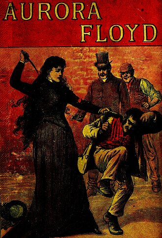
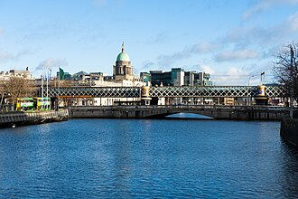
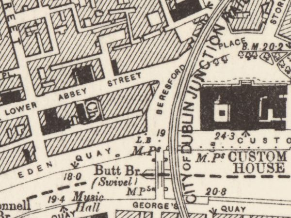
17Ithaca
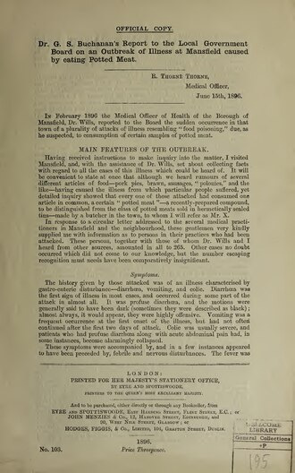
18Penelope
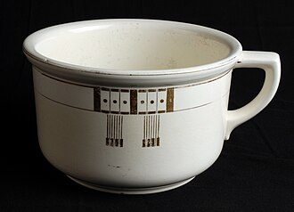
Colophon — every image, and where it came from
This is the attribution surface for all eighteen panels. CC BY 4.0 §3(a)(2) permits it to sit here rather than beside each image; CC BY-SA 2.0 permits it only while the panels stay bare. The panels themselves are licensed CC BY-SA 4.0. No photograph on this page is cropped: every photograph is shown whole and padded to the slot, because cropping a share-alike photograph to fit a grid is an adaptation and this atlas stays clear of that boundary. Every map frame is a region of a named sheet — selected, not cropped, under the author's map-region ruling of 27 July 2026 — and is disclosed below, sheet by sheet. Corrected 4 August 2026: this paragraph read “No image on this page is cropped” — a claim about the photographs written as a claim about the page. A map frame is a region of a named sheet, ruled a selection of the document rather than a crop to fit the grid (RIGHTS.md clause 7, 27 July 2026), and the sentence as written would have read as false the day the first map frame arrived.
| Ep | Layer | What | Licence and source |
|---|---|---|---|
| 1 | object | The Martello tower key | Creative Commons Attribution-ShareAlike 4.0 International (CC BY-SA 4.0), dual-tagged with Creative Commons Attribution-ShareAlike 2.0 Generic (CC BY-SA 2.0) — source |
| 1 | place | Martello_Tower,_Sandycove.jpg | Creative Commons Attribution-ShareAlike 2.0 Generic (CC BY-SA 2.0) — source |
| 1 | document | the Ordnance Survey six-inch sheet's own drawing of the place — a region of County Dublin Sheet 23 | CC BY 4.0 — the sheet's per-image tag, read by hand — source |
| 2 | object | Mr Deasy's foot-and-mouth letter | PD-USGov (with NARA-cooperation; Commons categories "PD US Government" and "CC-PD-Mark") — source |
| 2 | document | the Ordnance Survey six-inch sheet's own drawing of the locale the book puts Mr Deasy's school in — a region of County Dublin Sheet 23. THE SCHOOL IS JOYCE'S INVENTION and cannot be on any map; the LOCALE is the subject, admitted disclosed under the author's ruling of 2026-08-05 on document-for-an-invented-place | CC BY 4.0 — the sheet's per-image tag, read by hand — source |
| 3 | object | Stephen's boots (Mulligan's castoffs) | Creative Commons CC0 1.0 Universal Public Domain Dedication — source |
| 3 | place | South_Bull_at_Sandymount_looking_north.jpg | Creative Commons Attribution-ShareAlike 4.0 International (CC BY-SA 4.0), self-released by the photographer via {{self|cc-by-sa-4.0}} — source |
| 3 | document | the Ordnance Survey six-inch sheet's own drawing of the place — a region of County Dublin Sheet 19 | CC BY 4.0 — the sheet's per-image tag, read by hand — source |
| 4 | object | the Agendath Netaim flyer | {{PD-Art|PD-1923}} — public domain; the work is American (Chapman and Co., St. Louis), so PD-US-expired IS its country-of-origin tag rather than a US-only clearance of a foreign work — source |
| 4 | place | View south along Upper Dorset Street - geograph.org.uk - 1897946.jpg | CC BY-SA 2.0 Generic (Eric Jones, 28 May 2010, via Geograph). Licence sits in Structured Data on Commons, not in the wikitext. — source |
| 4 | document | the Ordnance Survey six-inch sheet's own drawing of the place — a region of County Dublin Sheet 18 | CC BY 4.0 — the sheet's per-image tag, read by hand — source |
| 5 | object | the Freeman's Journal (Bloom's copy) | {{PD-anon-70-EU}} + {{PD-1923}} (rendered as: "This work is in the public domain in the European Union and the United States because it is an anonymous work whose copyright has expired" / "published before January 1, 1931") — source |
| 5 | place | Dublin StAndrews WestlandRow 45 IMG 20250804 1027.jpg | CC0 (public-domain dedication) — source |
| 5 | document | the Ordnance Survey six-inch sheet's own drawing of the place — a region of County Dublin Sheet 18 | CC BY 4.0 — the sheet's per-image tag, read by hand — source |
| 6 | object | the brown macintosh | {{PD-anon-1923}} (resolves to PD-anon-expired): "This work was published before January 1, 1931 and it is anonymous or pseudonymous due to unknown authorship. It is in the public domain in the United States as well as countries and areas where the copyright terms of anonymous or pseudonymous works are 95 years or fewer since publication." — source |
| 6 | place | Glasnevin Cemetery, Dublin - geograph.org.uk - 5947111.jpg | CC BY-SA 2.0 Generic — Gareth James (geograph profile 32787), photographed 14 October 2018 — source |
| 6 | document | the Ordnance Survey six-inch sheet's own drawing of the place — a region of County Dublin Sheet 18 | CC BY 4.0 — the sheet's per-image tag, read by hand — source |
| 7 | object | the Keyes ad cutting | {{PD-UK-unknown}} — rendered on the file page as "Public domain / This UK artistic or literary work, of which the author is unknown and cannot be ascertained by reasonable enquiry, is in the public domain because it ... was made available to the public ... more than 70 years ago (before 1 January 1956)." — source |
| 7 | document | the Ordnance Survey six-inch sheet's own drawing of the place — a region of County Dublin Sheet 18 | CC BY 4.0 — the sheet's per-image tag, read by hand — source |
| 8 | object | The Elijah throwaway | {{cc-by-2.0}} — "This file is licensed under the Creative Commons Attribution 2.0 Generic license." Flickr-reviewed: FlickreviewR passed 2024-01-05, confirming cc-by-2.0 at source. — source |
| 8 | place | Fietsen staan tegen de stoeprand geparkeerd in een straat in Dublin, Bestanddeelnr 191-0869.jpg | CC0 1.0 public-domain dedication — source |
| 8 | document | the Ordnance Survey six-inch sheet's own drawing of the place — a region of County Dublin Sheet 18 | CC BY 4.0 — the sheet's per-image tag, read by hand — source |
| 9 | object | Stephen's Latin Quarter hat | Public Domain Mark 1.0 + PD-old-80 ("The author died in 1932, so this work is in the public domain in its country of origin and other countries and areas where the copyright term is the author's life plus 80 years or fewer") + PD-US-expired ("This work is in the public domain in the United States because it was published before January 1, 1931") + PD-Art (PD-old-auto-expired) — source |
| 9 | place | Kildare Street — the National Museum and National Library | Creative Commons Attribution-ShareAlike 3.0 Unported (CC BY-SA 3.0), self-published, dual-licensed at the reuser's election with GFDL — source |
| 9 | document | the Ordnance Survey six-inch sheet's own drawing of the place — a region of County Dublin Sheet 18 | CC BY 4.0 — the sheet's per-image tag, read by hand — source |
| 10 | object | Boylan's fruit basket (port and peaches) | Public domain — PD-old-100 (country of origin France; Manet d. 1883) plus Public Domain Mark 1.0 — source |
| 11 | object | The blind stripling's tapping cane | CC-BY-4.0 (Creative Commons Attribution 4.0 International), attribution: Auckland Museum — source |
| 11 | place | the Ormond Hotel, Upper Ormond Quay | Creative Commons Attribution 2.0 Generic (CC BY 2.0) — source |
| 11 | document | the Ordnance Survey six-inch sheet's own drawing of the place — a region of County Dublin Sheet 18 | CC BY 4.0 — the sheet's per-image tag, read by hand — source |
| 12 | object | the Jacobs' biscuit tin | {{PD-old-70-1923}} — renders on the file page as: "This work is in the public domain in its country of origin and other countries and areas where the copyright term is the author's life plus 70 years or fewer" PLUS "This work is in the public domain in the United States because it was published (or registered with the U.S. Copyright Office) before January 1, 1931." — source |
| 12 | document | the Ordnance Survey six-inch sheet's own drawing of the place — a region of County Dublin Sheet 18 | CC BY 4.0 — the sheet's per-image tag, read by hand — source |
| 13 | object | the lemon soap | PD-old-70-1923 — source |
| 13 | place | Sandymount_Strand_with_Poolbeg_Chimneys.jpg | Creative Commons Attribution-ShareAlike 4.0 International (CC BY-SA 4.0), self-released by the photographer via {{self|cc-by-sa-4.0}} — source |
| 13 | document | the Ordnance Survey six-inch sheet's own drawing of the place — a region of County Dublin Sheet 19 | CC BY 4.0 — the sheet's per-image tag, read by hand — source |
| 14 | object | Stephen's wages (three pounds twelve) | CC0 1.0 Universal Public Domain Dedication ({{Cc-zero}} on the file page; API LicenseShortName "CC0", UsageTerms "Creative Commons Zero, Public Domain Dedication") — source |
| 14 | document | the Ordnance Survey six-inch sheet's own drawing of the place — a region of County Dublin Sheet 18 | CC BY 4.0 — the sheet's per-image tag, read by hand — source |
| 15 | object | Stephen's ashplant | PD-old-100 + Public Domain Mark 1.0 + PD-US-expired — source |
| 15 | document | the Ordnance Survey six-inch sheet's own drawing of the place — a region of County Dublin Sheet 18 | CC BY 4.0 — the sheet's per-image tag, read by hand — source |
| 16 | object | Sweets of Sin | {{PD-old-100-expired}} — rendering as: "This work is in the public domain in its country of origin and other countries and areas where the copyright term is the author's life plus 100 years or fewer." + "This work is in the public domain in the United States because it was published (or registered with the U.S. Copyright Office) before January 1, 1931." + Creative Commons Public Domain Mark 1.0 — source |
| 16 | place | the cabman's shelter, Butt Bridge | Creative Commons Attribution-ShareAlike 4.0 International (CC BY-SA 4.0), released by the photographer under {{self}} — source |
| 16 | document | the Ordnance Survey six-inch sheet's own drawing of the place — a region of County Dublin Sheet 18 | CC BY 4.0 — the sheet's per-image tag, read by hand — source |
| 17 | document | Dr G. S. Buchanan's report to the Local Government Board on an outbreak of illness at Mansfield caused by eating potted meat (London: printed for H.M.S.O. by Eyre and Spottiswoode, 1896; 12 pages, 33 cm; report dated May 1896) | Public domain — {{PD-old-100-expired}} as tagged on Commons — source |
| 18 | object | the orangekeyed chamberpot | Creative Commons Attribution-Share Alike 3.0 Unported (CC BY-SA 3.0) — source |
Map frames — regions of named sheets
A six-inch sheet covers about eight kilometres and a slot renders at about a hundred pixels, so the whole sheet was never the document a slot names. Every map frame on this page is a region of a named Ordnance Survey sheet — positioned by the sheet's own lettering naming the place, never trimmed to make a composition — under the author's map-region ruling of 27 July 2026 (RIGHTS.md clause 7). CC BY 4.0 §3(a)(1)(B) requires that modification to be indicated, and a caption-free panel cannot indicate anything, so this table is the indication.
| Ep | Layer | The frame | Licence |
|---|---|---|---|
| 1 | document | a region of County Dublin Sheet 23 (NLS image 247667895, region 11000,6100,600,450) | Re-use: CC-BY (NLS) |
| 2 | document | a region of County Dublin Sheet 23 (NLS image 247667895, region 12380,8760,600,450) | Re-use: CC-BY (NLS) |
| 3 | document | a region of County Dublin Sheet 19 (NLS image 247667880, region 1150,8060,600,450) | Re-use: CC-BY (NLS) |
| 4 | document | a region of County Dublin Sheet 18 (NLS image 247667874, region 9930,4640,600,450) | Re-use: CC-BY (NLS). |
| 5 | document | a region of County Dublin Sheet 18 (NLS image 247667874, region 11590,6340,600,450) | Re-use: CC-BY (NLS). |
| 6 | document | a region of County Dublin Sheet 18 (NLS image 247667874, region 8520,1400,600,450) | Re-use: CC-BY (NLS). |
| 7 | document | a region of County Dublin Sheet 18 (NLS image 247667874, region 10460,5400,600,450) | Re-use: CC-BY (NLS). |
| 8 | document | a region of County Dublin Sheet 18 (NLS image 247667874, region 10500,6750,600,450) | Re-use: CC-BY (NLS). |
| 9 | document | a region of County Dublin Sheet 18 (NLS image 247667874, region 11100,6900,600,450) | Re-use: CC-BY (NLS). |
| 11 | document | a region of County Dublin Sheet 18 (NLS image 247667874, region 9490,5820,600,450) | Re-use: CC-BY (NLS). |
| 12 | document | a region of County Dublin Sheet 18 (NLS image 247667874, region 9350,5350,600,450) | Re-use: CC-BY (NLS). |
| 13 | document | a region of County Dublin Sheet 19 (NLS image 247667880, region 1150,8060,600,450) | Re-use: CC-BY (NLS) |
| 14 | document | a region of County Dublin Sheet 18 (NLS image 247667874, region 12000,6800,600,450) | Re-use: CC-BY (NLS). |
| 15 | document | a region of County Dublin Sheet 18 (NLS image 247667874, region 11380,4950,600,450) | Re-use: CC-BY (NLS). |
| 16 | document | a region of County Dublin Sheet 18 (NLS image 247667874, region 11050,5482,600,450) | Re-use: CC-BY (NLS). |
Reproduced with the permission of the National Library of Scotland.
What is missing, and why
An empty slot on this page is a fact about the record, not a gap in the work.
| Ep | Layer | Why it is empty |
|---|---|---|
| 2 | place | refused by rule 4(i) — REFUSED 27 JULY 2026 AT RULE 4(i), IDENTIFICATION, AND THE SLOT CANNOT BE FILLED BY SEARCHING HARDER. Mr Deasy's school is Joyce's invention. The 25 July survey proved by text search and an 800-metre geosearch that nothing depicting it exists on Commons in any form, so no held record can establish that any frame shows the thing this slot names — which is the first test, and it disposes. The three cleared candidates confirm it from the other side: an 1830 engraving seventy-four years early and before the railway made Dalkey a villa suburb; a photochrom dominated by Killiney Hill in which Dalkey village is not identifiable; and a 2011 street with a taxi, road markings and a DALKEY sign, which rule 3 refuses besides. The slot stays empty, and it is the honest kind of empty: not unfinished sourcing, but a place that does not exist to be photographed. |
| 7 | place | refused by rule 4(ii) — REFUSED 27 JULY 2026 BY RULE 4(ii), STRUCTURAL SURVIVAL — demolition, bombardment or fire fails absolutely, and this is bombardment. The single cleared frame is Prince's Street in MAY 1916 — the Freeman's Journal after the bombardment, twelve years after Bloomsday and after the building's destruction. Nothing on Commons shows the premises working. In a caption-free atlas the panel cannot say it is twelve years late, and the reader would take a ruin for the newspaper house Bloom walks into. That is not a rule application and it is not a chair's taste: build panel session 07 settled it 8-1, and the rule it produced disposes of this frame at the second test without reaching the third. Nelson dissented alone, on the ground that the anachronism is in the pixels rather than in a sentence, which is what a caption-free atlas needs; the dissent is kept in docs/panel-session-07.md. The slot stays empty with its token. |
| 10 | place | The place layer is empty on this panel and the panel says so. Base document 03 documents no place in this episode's hours. Its tracks name places, but a track is where a person is going or is sighted rather than where the episode sits, and at least one is marked [assumed] by the constraint model itself — so a track here would publish the model's assumption as the record's place (learning L-26). |
| 10 | document | the document follows the place, and this episode's place layer is DECIDED, not unsettled: the author ruled it EMPTY on 2026-07-26 (data/atlas-place-choices.json, a ruling of absence): "The place layer is empty on this panel and the panel says so. Base document 03 documents no place in this episode's hours. Its tracks name places, but a track is where a person is going or is sighted rather than where the episode sits, and at least one is marked [assumed] by the constraint model itself — so a track here would publish the model's assumption as the record's place (learning L-26)." An empty place layer leaves the document layer empty with it — ruled, not waiting. |
| 12 | place | refused by the author's ratified image rules — REFUSED by the text ruling, and no candidate survives it. The survey's first choice is a photograph of the bilingual street nameplate — a street sign photographed as a street sign, which is a caption by another route and is exactly what the ruling refuses. The only other cleared candidate is Green Street courthouse, on a different street, which the survey itself says would read as an old Dublin institutional facade and stop there. So episode 12's place slot is OPEN, and it is open for a reason the record can state: Barney Kiernan's is gone, Commons holds no image of it, and the street that remains cannot be shown without a sign. |
| 14 | place | Nothing to choose. The survey cleared no admissible photograph of Holles Street hospital at all — three candidates cleared their licences and an independent refuter broke all three. The subject the author picked stands; the slot stays empty and the panel shows it empty. |
| 15 | place | refused by the author's ratified image rules — REFUSED by the vanished-place ruling's second clause. Both cleared candidates show the Corporation flats that REPLACED Nighttown after the 1925 closure — the ruling says show nothing rather than show that. The survey had reached the same place without the rule: it said in terms that it was not entirely comfortable recommending either. Episode 15's place slot is OPEN, and the reason is the strongest kind: the thing the panel would depict is the erasure of the thing the panel is for. |
| 17 | object | No image of this object class could be cleared to the project's standard, and on 26 July 2026 the author ruled that this slot stays EMPTY rather than being filled by something that is not an object. Episode 17 therefore carries fewer layers than three, and the colophon records the absence. Corrected 27 July 2026 (build panel session 07): this field said "a two-layer panel — place and document", and episode 17s PLACE slot is not acquired either, so the panel carries one layer today. How many layers a panel has is a fact about what has been acquired, and asserting it here is a count that goes stale between one acquisition and the next (L-22) — the coverage is derived onto the page itself instead. The panel carries no substitute object. |
| 17 | place | refused by RIGHTS.md clause 7 — 7 Eccles Street was demolished in 1967. In a caption-free atlas a photograph of the surviving terrace would read as Bloom's door and be the wrong house, and there is no caption to say so. RIGHTS.md clause 7 rules this slot to a document instead. The slot carries instead: the Thom's Official Directory of Ireland 1904 entry for 7 Eccles Street. |
| 18 | place | The place layer is empty on this panel and the panel says so. Nothing in the held record places this episode: base document 03 documents no place in its hours and it has no tracks either. Empty shown as empty. |
| 18 | document | the document follows the place, and this episode's place layer is DECIDED, not unsettled: the author ruled it EMPTY on 2026-07-26 (data/atlas-place-choices.json, a ruling of absence): "The place layer is empty on this panel and the panel says so. Nothing in the held record places this episode: base document 03 documents no place in its hours and it has no tracks either. Empty shown as empty." An empty place layer leaves the document layer empty with it — ruled, not waiting. |
Institutional marks on the scans
A caption-free panel cannot tell a reader that the stamp is a modern library's and not part of the 1896 printing. That is the limitation, it is real, and 'mention them where needed' is what is done about it: every admitted mark is recorded against its image and must appear in the Atlas's colophon, which is the only surface the form leaves available. The ruling, 2026-07-26, in the author's own words: “We have to accept limitations and mention them where needed and continue.”
Institutional marks are admitted and disclosed — still gated regardless of the licence: the institutional-marks question was RULED on 2026-07-26, in the author's own words: “We have to accept limitations and mention them where needed and continue.” — an ownership mark on a scan of a period document is admitted and disclosed where it bites; a photographer's watermark remains an authorship credit and stays refused (C-76, L-34).
| Ep | Layer | The mark |
|---|---|---|
| 17 | document | Page 1 carries an inked WELLCOME LIBRARY / General Collections ownership stamp in the lower right, with a handwritten accession number beside it. Page 2 carries a printed Wellcome barcode, 22502708362, in the lower left. Both are modern marks on the physical artefact and neither is part of the 1896 printing. |
Caveats
- 1 object — A KIND, WHICH IS WHAT THIS LAYER COLLECTS. The slot is keyed to The Martello tower key; no photograph of that thing exists, because it is Joyce’s invention or is unphotographable as itself. What is shown is a member of its KIND, cleared and licensed on its own terms. RULED by the author on 2026-07-27: this atlas is a museum of the day’s kinds rather than of its relics, and it says so here rather than letting the first slot’s position assert an identity it cannot support. Rule 4(i) is therefore satisfied on its own terms — the slot names a kind and the frame shows a member of it — instead of being suspended over seventeen panels. Raised by the joint session of 27 July 2026 as catch C-84, where this sentence was an apology for a defect; it is now the description of the form, and the pictures did not change (catch C-92).
- 1 place — This is not a portrait of the whole tower and it does not show Sandycove. It is the upper third only — the granite ashlar courses, the string course, the parapet of the gun platform, and the machicolation over the door — shot from below against a clear blue sky. Nothing establishes the sea, the rocks, the Forty Foot, or the headland; a reader with no caption sees a massive round granite fortification cropped at the shoulder, and could not tell it from any other Dublin Bay Martello tower. What it buys in exchange is that the frame contains not one modern object: no museum entrance, no signage, no plaque, no cars, no visitors, no flag. Every surface visible in it is 1804 fabric, which is the rare property in this pool — nearly every other clean-licensed view of this tower carries the museum's glass kiosk, its brick retaining wall or its interpretive plaque somewhere in shot. It stands for the tower as Joyce's characters would have met it, and it does so by showing less rather than by pretending more.
- 2 object — A KIND, WHICH IS WHAT THIS LAYER COLLECTS. The slot is keyed to Mr Deasy's foot-and-mouth letter; no photograph of that thing exists, because it is Joyce’s invention or is unphotographable as itself. What is shown is a member of its KIND, cleared and licensed on its own terms. RULED by the author on 2026-07-27: this atlas is a museum of the day’s kinds rather than of its relics, and it says so here rather than letting the first slot’s position assert an identity it cannot support. Rule 4(i) is therefore satisfied on its own terms — the slot names a kind and the frame shows a member of it — instead of being suspended over seventeen panels. Raised by the joint session of 27 July 2026 as catch C-84, where this sentence was an apology for a defect; it is now the description of the form, and the pictures did not change (catch C-92).
- 3 object — A KIND, WHICH IS WHAT THIS LAYER COLLECTS. The slot is keyed to Stephen's boots (Mulligan's castoffs); no photograph of that thing exists, because it is Joyce’s invention or is unphotographable as itself. What is shown is a member of its KIND, cleared and licensed on its own terms. RULED by the author on 2026-07-27: this atlas is a museum of the day’s kinds rather than of its relics, and it says so here rather than letting the first slot’s position assert an identity it cannot support. Rule 4(i) is therefore satisfied on its own terms — the slot names a kind and the frame shows a member of it — instead of being suspended over seventeen panels. Raised by the joint session of 27 July 2026 as catch C-84, where this sentence was an apology for a defect; it is now the description of the form, and the pictures did not change (catch C-92).
- 3 place — It is the weaker picture. The sky is a flat overcast grey with no modelling, and the horizon is a row of container gantries, silos and a single tall modern stack — which in a caption-free panel reads as a working port rather than as Joyce's shore. The rusted iron post and rock armour in the near left corner are modern sea defence. It stands for the strand as Stephen's route, and for very little else; if the panel is meant to make a reader feel the strand rather than locate it, prefer the "looking south" frame.
- 4 object — A KIND, WHICH IS WHAT THIS LAYER COLLECTS. The slot is keyed to the Agendath Netaim flyer; no photograph of that thing exists, because it is Joyce’s invention or is unphotographable as itself. What is shown is a member of its KIND, cleared and licensed on its own terms. RULED by the author on 2026-07-27: this atlas is a museum of the day’s kinds rather than of its relics, and it says so here rather than letting the first slot’s position assert an identity it cannot support. Rule 4(i) is therefore satisfied on its own terms — the slot names a kind and the frame shows a member of it — instead of being suspended over seventeen panels. Raised by the joint session of 27 July 2026 as catch C-84, where this sentence was an apology for a defect; it is now the description of the form, and the pictures did not change (catch C-92).
- 4 place — A wide view straight down the roadway, taking in both terraces and no single doorway. The camera (Structured Data P1259: 53.357650, -6.263443) stands at the northern end of Dorset Street Upper — which Nominatim bounds at roughly 53.3530-53.3574 / -6.2683 to -6.2639 — looking south along it. What the frame does NOT show: it does not show Eccles Street. The camera stands close to where Eccles Street's east end meets Dorset Street, but it is turned to look directly away, so no part of Eccles Street enters the picture. It also shows no butcher's shop and no shopfront framed large enough to be mistaken for one; the shopfronts on the left run away from the camera in sharp perspective and none is legible as a subject. Nothing in the frame existed on 16 June 1904: the surviving street fabric is largely later rebuilding, and the picture additionally contains motor cars, a red delivery van, a white van, a bus, painted lane markings and a hatched yellow box, steel bollards, a modern litter bin, a black refuse sack, tall modern street lamps, traffic and bus-lane signage on galvanised poles, a wheeled advertising board, and pedestrians in 2010 dress. The light is flat bright overcast, not a June morning.
- 5 object — A KIND, WHICH IS WHAT THIS LAYER COLLECTS. The slot is keyed to the Freeman's Journal (Bloom's copy); no photograph of that thing exists, because it is Joyce’s invention or is unphotographable as itself. What is shown is a member of its KIND, cleared and licensed on its own terms. RULED by the author on 2026-07-27: this atlas is a museum of the day’s kinds rather than of its relics, and it says so here rather than letting the first slot’s position assert an identity it cannot support. Rule 4(i) is therefore satisfied on its own terms — the slot names a kind and the frame shows a member of it — instead of being suspended over seventeen panels. Raised by the joint session of 27 July 2026 as catch C-84, where this sentence was an apology for a defect; it is now the description of the form, and the pictures did not change (catch C-92).
- 5 place — The widest single frame found: it holds the church portico, the Georgian terrace running away to the right, AND the Loop Line bridge with the station's curved roof at the left — three of the quarter's four landmarks at once. It does NOT show Sweny's or the post office. Not on 16 June 1904: a red-surfaced cycle lane and modern painted road markings, modern lamp standards, a traffic signal, printed notice boards on the railings, the station's twentieth-century curved roof and modern hoardings on the bridge — and, at the right edge, a white camping tent pitched against the churchyard railings, which is a piece of contemporary Dublin the panel would carry silently and which the author should see before ruling.
- 6 object — A KIND, WHICH IS WHAT THIS LAYER COLLECTS. The slot is keyed to the brown macintosh; no photograph of that thing exists, because it is Joyce’s invention or is unphotographable as itself. What is shown is a member of its KIND, cleared and licensed on its own terms. RULED by the author on 2026-07-27: this atlas is a museum of the day’s kinds rather than of its relics, and it says so here rather than letting the first slot’s position assert an identity it cannot support. Rule 4(i) is therefore satisfied on its own terms — the slot names a kind and the frame shows a member of it — instead of being suspended over seventeen panels. Raised by the joint session of 27 July 2026 as catch C-84, where this sentence was an apology for a defect; it is now the description of the form, and the pictures did not change (catch C-92).
- 6 place — The frame is a raking wide view over a dense field of 1860s-1900s headstones, Celtic crosses and a standing Sacred Heart figure, running back to a treeline. It does NOT show the O'Connell round tower, the Finglas Road gates, the mortuary chapel, the museum, any path a funeral cortege would take, or any open grave — so it claims the burial ground and nothing more specific. Objects that did not exist on 16 June 1904: a small blue-and-white adhesive grave-maintenance sticker on the shaft of the nearest Celtic cross (I found it only by zooming to that region at full resolution — at panel size it is an illegible blue fleck, not readable text); a modern asphalt road carrying a painted white edge-line along the right margin; red and white decorative gravel chippings, concrete grave kerbing and clipped box borders, all late-20th-century grounds practice; the background trees are later plantings. The monuments themselves are overwhelmingly of the right period.
- 7 object — A KIND, WHICH IS WHAT THIS LAYER COLLECTS. The slot is keyed to the Keyes ad cutting; no photograph of that thing exists, because it is Joyce’s invention or is unphotographable as itself. What is shown is a member of its KIND, cleared and licensed on its own terms. RULED by the author on 2026-07-27: this atlas is a museum of the day’s kinds rather than of its relics, and it says so here rather than letting the first slot’s position assert an identity it cannot support. Rule 4(i) is therefore satisfied on its own terms — the slot names a kind and the frame shows a member of it — instead of being suspended over seventeen panels. Raised by the joint session of 27 July 2026 as catch C-84, where this sentence was an apology for a defect; it is now the description of the form, and the pictures did not change (catch C-92).
- 8 object — A KIND, WHICH IS WHAT THIS LAYER COLLECTS. The slot is keyed to The Elijah throwaway; no photograph of that thing exists, because it is Joyce’s invention or is unphotographable as itself. What is shown is a member of its KIND, cleared and licensed on its own terms. RULED by the author on 2026-07-27: this atlas is a museum of the day’s kinds rather than of its relics, and it says so here rather than letting the first slot’s position assert an identity it cannot support. Rule 4(i) is therefore satisfied on its own terms — the slot names a kind and the frame shows a member of it — instead of being suspended over seventeen panels. Raised by the joint session of 27 July 2026 as catch C-84, where this sentence was an apology for a defect; it is now the description of the form, and the pictures did not change (catch C-92).
- 8 place — A wide view along the Grafton Street footway, taken from behind a rank of about a dozen parked bicycles, with the street receding to a hazy distance of motor traffic and a cyclist. Two men in caps and a woman in a coat stand at the shop window on the left. WHAT THE FRAME DOES NOT SHOW: Duke Street, Davy Byrne's, the Burton, and any part of Grafton Street's smart end - this is the working-shop stretch. ANACHRONISM: dated 1946. 'F. W. WOOLWORTH & CO. Lᵀᴰ' runs across the fascia at the left in the picture's largest lettering (Woolworth's Grafton Street opened in 1914, ten years after Bloomsday), with a 'SINGER' projecting sign beyond it; the saloon cars in the distance are 1930s-40s, the bicycles are 1940s roadsters, the clothes are 1940s, and the roadway is tarmacked. The reader with no caption gets 'a busy shopping street in an old city, bicycles everywhere' - true, and not misleading about the century, but the Woolworth's fascia is the single most legible object in the frame and it is a twentieth-century chain store.
- 9 object — A KIND, WHICH IS WHAT THIS LAYER COLLECTS. The slot is keyed to Stephen's Latin Quarter hat; no photograph of that thing exists, because it is Joyce’s invention or is unphotographable as itself. What is shown is a member of its KIND, cleared and licensed on its own terms. RULED by the author on 2026-07-27: this atlas is a museum of the day’s kinds rather than of its relics, and it says so here rather than letting the first slot’s position assert an identity it cannot support. Rule 4(i) is therefore satisfied on its own terms — the slot names a kind and the frame shows a member of it — instead of being suspended over seventeen panels. Raised by the joint session of 27 July 2026 as catch C-84, where this sentence was an apology for a defect; it is now the description of the form, and the pictures did not change (catch C-92).
- 9 place — It shows the National Library only — not the National Museum, and not Kildare Street. It is a close view of the forecourt gate, so a reader gets "the gate of the Library" rather than "the street with its two rotundas", and the slot is named for both institutions. Second, the panel will carry a legible word: LIBRARY, in gilt, is lettering cast into the photographed gate, part of the fabric and not a caption or credit we add, so it breaches nothing — but it is worth the author knowing that this panel will read as labelled where no other panel does, and deciding whether that is a virtue or an inconsistency. Third, it is a 2010 photograph. The gates, the gilt lettering and the rotunda were all standing in 1904 and nothing in the frame contradicts that, but the photograph proves nothing about 1904 and does not pretend to.
- 10 object — A KIND, WHICH IS WHAT THIS LAYER COLLECTS. The slot is keyed to Boylan's fruit basket (port and peaches); no photograph of that thing exists, because it is Joyce’s invention or is unphotographable as itself. What is shown is a member of its KIND, cleared and licensed on its own terms. RULED by the author on 2026-07-27: this atlas is a museum of the day’s kinds rather than of its relics, and it says so here rather than letting the first slot’s position assert an identity it cannot support. Rule 4(i) is therefore satisfied on its own terms — the slot names a kind and the frame shows a member of it — instead of being suspended over seventeen panels. Raised by the joint session of 27 July 2026 as catch C-84, where this sentence was an apology for a defect; it is now the description of the form, and the pictures did not change (catch C-92).
- 11 object — A KIND, WHICH IS WHAT THIS LAYER COLLECTS. The slot is keyed to The blind stripling's tapping cane; no photograph of that thing exists, because it is Joyce’s invention or is unphotographable as itself. What is shown is a member of its KIND, cleared and licensed on its own terms. RULED by the author on 2026-07-27: this atlas is a museum of the day’s kinds rather than of its relics, and it says so here rather than letting the first slot’s position assert an identity it cannot support. Rule 4(i) is therefore satisfied on its own terms — the slot names a kind and the frame shows a member of it — instead of being suspended over seventeen panels. Raised by the joint session of 27 July 2026 as catch C-84, where this sentence was an apology for a defect; it is now the description of the form, and the pictures did not change (catch C-92).
- 11 place — Stated plainly rather than stretched. FIRST, this is not a photograph of the Ormond Hotel and does not claim to be. It is a photograph of the quay the hotel stood on. That is exactly why it is safe: a wide view of a terrace claims the terrace, whereas the 7 Eccles Street failure happens when a photograph frames one door and the caption-free panel silently turns it into Bloom's door. Nothing here is framed as a single building, and no building in it is identifiable as the hotel without a caption — which in a caption-free atlas is a virtue, not a defect. SECOND, and this must be flagged hard: nothing in this frame is 1904 fabric in the sense a reader might assume. The photograph is from September 2012. The Ormond Hotel was demolished in 2018 and rebuilt, so the present-day quay does not contain it at all; and the building demolished in 2018 was itself a much-altered twentieth-century thing, not the hotel Joyce put Bloom in. So this image is one remove from the book on both counts — it shows a 2012 streetscape, and even the 2012 streetscape was not Joyce's. What survives across all of it is the alignment: the river, the quay wall, the line of the terrace, the Four Courts dome in the same place. That continuity is the whole of the claim. THIRD, aspect ratio: 3168x1505 is 2.105:1, a wide letterbox, which will pad awkwardly in a grid. Note that this file is CC BY 2.0 and not share-alike, so the no-crop rule (which RIGHTS.md states for share-alike images) does not bind it and a crop would be licit — but that is the author's call, not mine, and padding uncropped keeps the whole Atlas on one rule. FOURTH, the photograph is HDR tone-mapped: the sky and the brickwork carry a visible processing signature that is the photographer's style and not the Atlas's. If that reads as authorial interference, the geograph backup is a plain documentary frame.
- 12 object — A KIND, WHICH IS WHAT THIS LAYER COLLECTS. The slot is keyed to the Jacobs' biscuit tin; no photograph of that thing exists, because it is Joyce’s invention or is unphotographable as itself. What is shown is a member of its KIND, cleared and licensed on its own terms. RULED by the author on 2026-07-27: this atlas is a museum of the day’s kinds rather than of its relics, and it says so here rather than letting the first slot’s position assert an identity it cannot support. Rule 4(i) is therefore satisfied on its own terms — the slot names a kind and the frame shows a member of it — instead of being suspended over seventeen panels. Raised by the joint session of 27 July 2026 as catch C-84, where this sentence was an apology for a defect; it is now the description of the form, and the pictures did not change (catch C-92).
- 13 object — A KIND, WHICH IS WHAT THIS LAYER COLLECTS. The slot is keyed to the lemon soap; no photograph of that thing exists, because it is Joyce’s invention or is unphotographable as itself. What is shown is a member of its KIND, cleared and licensed on its own terms. RULED by the author on 2026-07-27: this atlas is a museum of the day’s kinds rather than of its relics, and it says so here rather than letting the first slot’s position assert an identity it cannot support. Rule 4(i) is therefore satisfied on its own terms — the slot names a kind and the frame shows a member of it — instead of being suspended over seventeen panels. Raised by the joint session of 27 July 2026 as catch C-84, where this sentence was an apology for a defect; it is now the description of the form, and the pictures did not change (catch C-92).
- 13 place — The two red-and-white striped chimneys are the ESB Poolbeg station's, built 1971 and 1978. They did not exist on 16 June 1904, and nothing of the 1903 Pigeon House generating station that Stephen and Bloom would have seen is legible in this frame. State it plainly: the chimneys stand roughly where the Pigeon House stood, on the same spit, but they are twentieth-century objects and this is a 2020 photograph. What is authentically 1904 here is the strand itself, the tidal geometry, the reach of the bay and Howth closing it — the constants. The seawall at bottom-left carries modern graffiti. This is a photograph of the PLACE across time, not a reconstruction of the place in 1904, and a reader with no caption will read it as contemporary Dublin, correctly.
- 14 object — A KIND, WHICH IS WHAT THIS LAYER COLLECTS. The slot is keyed to Stephen's wages (three pounds twelve); no photograph of that thing exists, because it is Joyce’s invention or is unphotographable as itself. What is shown is a member of its KIND, cleared and licensed on its own terms. RULED by the author on 2026-07-27: this atlas is a museum of the day’s kinds rather than of its relics, and it says so here rather than letting the first slot’s position assert an identity it cannot support. Rule 4(i) is therefore satisfied on its own terms — the slot names a kind and the frame shows a member of it — instead of being suspended over seventeen panels. Raised by the joint session of 27 July 2026 as catch C-84, where this sentence was an apology for a defect; it is now the description of the form, and the pictures did not change (catch C-92).
- 15 object — A KIND, WHICH IS WHAT THIS LAYER COLLECTS. The slot is keyed to Stephen's ashplant; no photograph of that thing exists, because it is Joyce’s invention or is unphotographable as itself. What is shown is a member of its KIND, cleared and licensed on its own terms. RULED by the author on 2026-07-27: this atlas is a museum of the day’s kinds rather than of its relics, and it says so here rather than letting the first slot’s position assert an identity it cannot support. Rule 4(i) is therefore satisfied on its own terms — the slot names a kind and the frame shows a member of it — instead of being suspended over seventeen panels. Raised by the joint session of 27 July 2026 as catch C-84, where this sentence was an apology for a defect; it is now the description of the form, and the pictures did not change (catch C-92).
- 16 object — A KIND, WHICH IS WHAT THIS LAYER COLLECTS. The slot is keyed to Sweets of Sin; no photograph of that thing exists, because it is Joyce’s invention or is unphotographable as itself. What is shown is a member of its KIND, cleared and licensed on its own terms. RULED by the author on 2026-07-27: this atlas is a museum of the day’s kinds rather than of its relics, and it says so here rather than letting the first slot’s position assert an identity it cannot support. Rule 4(i) is therefore satisfied on its own terms — the slot names a kind and the frame shows a member of it — instead of being suspended over seventeen panels. Raised by the joint session of 27 July 2026 as catch C-84, where this sentence was an apology for a defect; it is now the description of the form, and the pictures did not change (catch C-92).
- 16 place — State this plainly: the cabman's shelter is NOT in this photograph, and no photograph of it exists on Commons. The shelter is gone. What is more, the road bridge in the foreground is NOT the bridge Bloom crossed — the 1904 Butt Bridge was the 1879 iron swing bridge (Beresford Bridge), demolished and replaced by the present fixed concrete span in 1932. Only the Loopline railway viaduct behind it is 1904 fabric. The image also carries visible modern Dublin: green double-decker buses on Eden Quay at the left edge, IFSC glass office blocks behind the Custom House, contemporary lamp standards and quay railings. Caption-free, a reader sees 'the Liffey at the Custom House, with a railway bridge' — which is true, is the right stretch of river, and claims nothing it cannot support. It does not read as 1904 and should not be presented as though it did. This is the site, honestly; it is not the hut, and it is not the 1904 bridge.
- 17 document — THE TAG'S STATED GROUND IS NOT TRUE OF THIS AUTHOR, AND THE CLEARANCE HOLDS ANYWAY — recorded rather than smoothed over, because a licence this Atlas would rest on should not rest on a reason that does not apply. {{PD-old-100-expired}} asserts a life-plus-100 basis. Buchanan died on 11 October 1936 — verified against two sources that did not write the Commons page: The National Archives' authority record ('Buchanan, Sir George Seaton, (1869-1936)') and Nature's obituary of 14 November 1936. That is 90 years, not 100. The work is public domain on TWO independent country-of-origin grounds, either of which alone satisfies RIGHTS.md clause 7: it is an 1896 H.M.S.O. publication, so UK Crown copyright ran 50 years from publication and expired in 1946; and life-plus-70 for an author who died in 1936 expired on 1 January 2007. The tag names the wrong one of the available grounds. L-17, and the second instance of that shape in one day.
- 18 object — A KIND, WHICH IS WHAT THIS LAYER COLLECTS. The slot is keyed to the orangekeyed chamberpot; no photograph of that thing exists, because it is Joyce’s invention or is unphotographable as itself. What is shown is a member of its KIND, cleared and licensed on its own terms. RULED by the author on 2026-07-27: this atlas is a museum of the day’s kinds rather than of its relics, and it says so here rather than letting the first slot’s position assert an identity it cannot support. Rule 4(i) is therefore satisfied on its own terms — the slot names a kind and the frame shows a member of it — instead of being suspended over seventeen panels. Raised by the joint session of 27 July 2026 as catch C-84, where this sentence was an apology for a defect; it is now the description of the form, and the pictures did not change (catch C-92).
- What this page weighs is measured rather than estimated: 2.1 MB across 43 images, the largest of them 0.3 MB. The panels ship panel-width derivatives; the archive-resolution files stay in the repository beside them — this dimension is the strongest candidate for the project's eventual physical form — and the colophon's source links remain the route to the originals. The images load lazily. Corrected 4 August 2026: this caveat read “This page is heavy” and recorded the weight as a defect — the panels then shipped the archive-resolution files themselves, and a reader on a phone downloaded about twenty times the pixels the screen used. The panels now ship a display derivative fetched from Commons at panel width; the archive files remain in the repository, where a reader downloads none of them.
- This atlas is built from one reader's first cover-to-cover reading of the book, in July 2026. n = 1 (anchor A10) — and the arrangement is not that reader's. Of the 10 place frames on this page, 5 were chosen by the chair of this build with no ratified rule reaching them, 2 by the chair applying a rule the author ratified, and 3 were admitted by the author's own ratified rules. Every choice of the chair's is recorded as the chair's, dated, and reversible by a sentence; not one is recorded as the author's. Corrected 27 July 2026: this caveat read “the arrangement is that reader's”, and named the wrong hand — the reader read the book, and somebody else chose these pictures. A10 asks a document to say its n = 1 in its own voice, which means saying whose voice it is (catch C-88).
- Sourced and inferred are marked apart throughout (A5). A panel's place is the place base document 03 documents in that episode's hours, or the place the author chose from several the record does not rank — and which of those it is, is recorded.